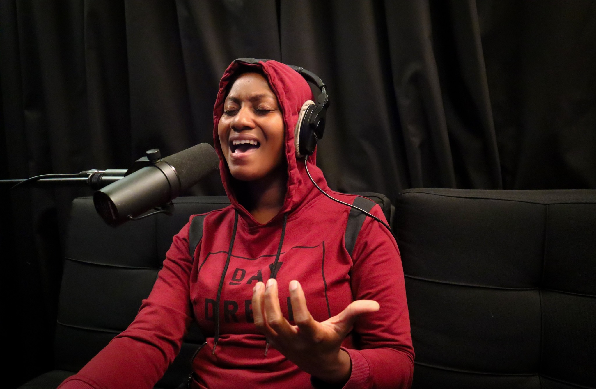
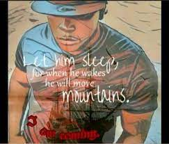

GALLERY
Ameeka Lve released her first single Heaven Knows... "I enjoyed every minute of developing this creation! The hospitality, ambience, service and sound quality set the mood just rigth to capture the ethos of this piece" AL

Rocker's Island was the venue for a monumental bass jam session with the A-List bass players in Trinidad and Tobago including Sean Friday, Rodney Alexander, Andre Jack, and many others. Hosting this talented group was not only historic but a truly fun experience.
"ONLY was my second single released by Rocker's Island and genre authenticity is definitely not an issue. I was more that pleased to promote my song because of the high quality production." CHF
The rhythmic styles of Gavindra Dookhie is evident in his original compostion, Free as Jerry Howai captures light heartedness of the title. "This has been a dream come true! I can't get over how easy this project was from start to finish and the level of professional music expertise is unprecedented." GD
"Going into this project, I thought it may have been challenging to express the haunting melody of Heartbreaker that I envisoned, but I was truly amazed by the final product that exceeded my expectations. Rocker's Island pays attention to the clients needs and gives us what we want, and more." GD
"As a professional musician, I believe it is important to showcase the talent of Trinidad and Tobago. Working with Rocker's Island to film this drum recording puts our local musicians in an international space to be heard and appreciated." AS
The collaboration of Lee Mercy and Croney on Bitter Sweet brings the rap genre front and center. "Not all genres and music styles are easily represented oustide of their regions, but Rocker's Island is second to none in musical authenticity." LM&C

"I truly love the nostalgia of Christmas which is why I wrote so many songs with a holiday theme and needed a music produder to give me that Trini vibe. Rocker's Island was just what I needed, they staisfied and surpassed my requirements in so many ways and I am indeed thankful." Devon Flemming
"Coming to Trinidad and Tobago from Nigeria, I was unsure about the opportunities available for me in music but I am thankful that I was able to find a musical space so that None Can Be Compared could become a reality" AOB